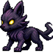

 Ghost
GhostTap a stage to read its story.
This Umbrapup is a small, compact wolf pup with fur so dark it absorbs light, bright yellow eyes that pierce the cave gloom, and small rounded ears that track every sound. Wisps of shadow drift from its paws when it walks, leaving a faint ghostly trail. It follows the old patrol routes of the Shadow Caves instinctively, before any trainer ever teaches it to - as if the paths are already written into its bones. The guardians believe Akilla's loyalty passed into these pups when he was lost to Abalont's shadow.
Field note: Umbrapup pups always run the same patrol loop when left alone - the exact route varies by individual, but none of them ever learned it.
Shadow Caves. Umbrapup and its family are found in the Shadow Caves. See everyone who lives there.
Share a Bond Food that matches its types to become friends. Umbrapup loves:
A Bond Food is not a trick. It joins your spirit with the Kimuro's spirit, and only when it chooses you.
Print the Kimuro adventure packs: mazes, cards, a board game and Bond Mark medals.
See the printable packs